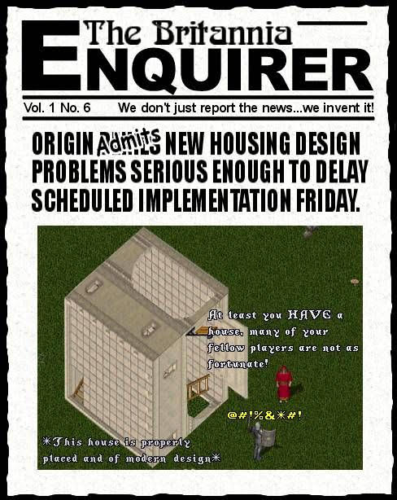

Sheesh! Just goes to show you how you have to stay on top of the News. When I started doing this edition, Housing was a go for Friday. Then, before the virtual ink was dry, BOOM! Origin announces another housing delay. (Like I didn't see that one coming). Anyway, I made a slight modification to the headline. So, do you think we will EVER get the new housing? I am beginning to wonder, and to tell you the truth I am also getting sick and tired of logging at the inn in Trammel. I nearly got off on another rant here but I ain't gonna do it (this week anyway). Oh well, one thing you CAN rely on is that every week I'll be back with the latest. And you can take that to the bank ... Just don't DUPE it and try to sell it on EBAY :/
later...Tryon